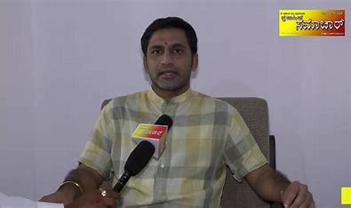
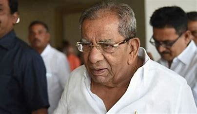
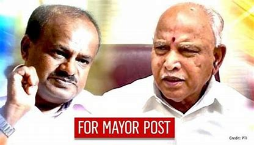
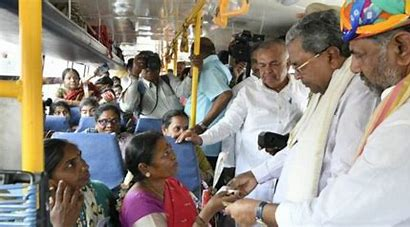
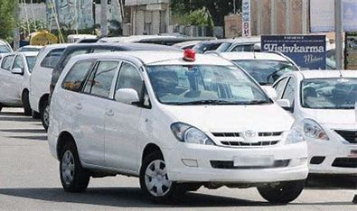
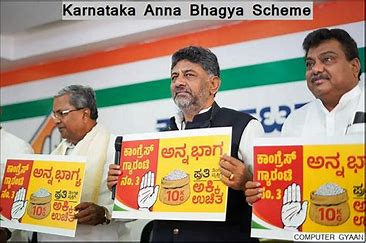

POLITICS

Hassan Needs Kamal
Preetham Gowda, a former Bharatiya Janata Party (BJP) legislator from the Hassan assembly constituency,
famously wrested the seat from the Janata Dal Secular (JDS) in 2018.
Hassan is the political fortress of JDS chief Deve Gowda’s family and Preetham’s win was considered a major debacle.
However, the JDS managed to regain the seat in the May assembly polls.

MLA's Big Allegationt
Veteran Congress leader Shamanuru claims, "Lingayats have not been given equal representation in the Karnataka cabinet"

United in Karnataka
JDS, BJP in ‘United State for Karnataka’: JDS to Seek 6 Seats from NDA ,
The Janata Dal-Secular (JDS) will seek at least six of the 28 Lok Sabha seats in Karnataka,

Karnataka BANDH
Karnataka News | Karnataka State Private Transport Association Declared A Citywide 'Bandh'.
The Federation of the Karnataka State Private Transport Association declared a citywide 'bandh' in Bengaluru on Monday.

33 innova cars
Karnataka Government Orders High End Rides For Its Ministers | News18Karnataka ministers to get high-end rides as the state govt orders 33 Innova cars. 'Taxpayers money being wasted, slams BJP

RICE politics
LCongress Vs BJP Escalates As Rice Politics in Karnataka Heats Up
Congress vs BJP escalates as rice politics in Karnataka heats up
.The rice politics in Karnataka heated up with Chief Minister Siddaramaiah accusing the Centre of creating obstacles to supply rice for its poll guarantee of 10 kilograms rice to each member of the BPL family under the ‘Anna Bhagya’ scheme.